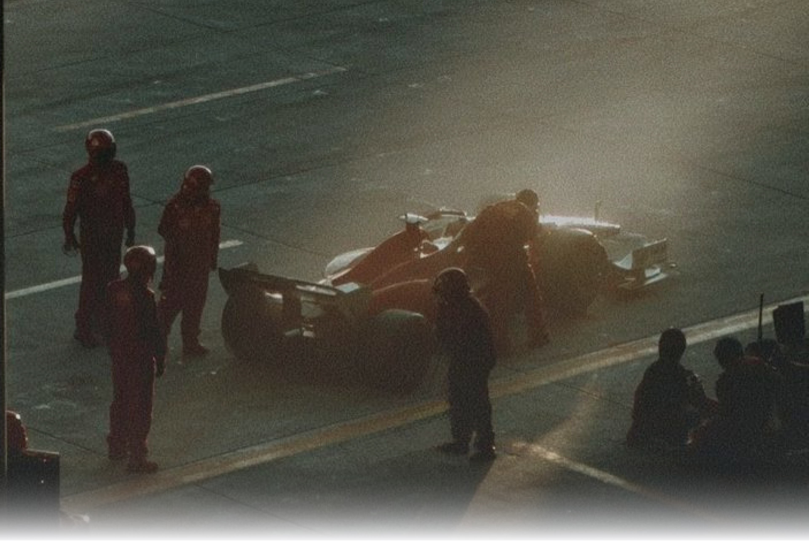
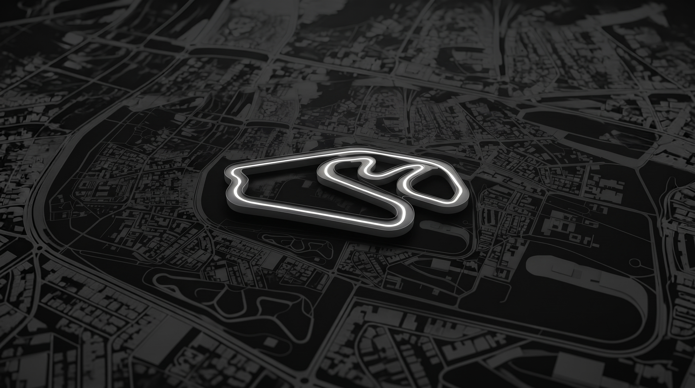
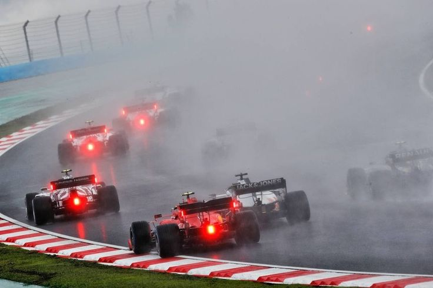

descubrí los patrones que pueden anticipar lo que viene.
el calendario oficial agrupa las pistas por logística comercial. undertrack las reclasifica según la violencia física que ejercen sobre el auto.

el nombre interlagos significa literalmente «entre lagos». el autódromo se construyó en los años 40 entre los embalses de guarapiranga y billings, en são paulo.
el trazado original medía casi 8 km. en 1990 fue rediseñado y acortado para volver a recibir a la fórmula 1 moderna: ¡el circuito actual es prácticamente la mitad!
la famosa bajada de curvas 1 y 2 fue incorporada en la reforma de 1989 siguiendo la propuesta directa de ayrton senna. luego recibió su nombre en su honor.
curvas ultra rápidas enlazadas (a más de 200 km/h) donde el auto dobla a fondo apoyado contra el piso.
rectas larguísimas seguidas de frenadas salvajes y curvas lentas de aceleración.
trazados ondulados con desniveles, subidas, bajadas y una combinación equilibrada de sectores lentos, medios y rápidos.
calles angostas, muros de hormigón a centímetros de la rueda, muchas curvas de 90° en primera o segunda marcha y casi nulo espacio para sobrepasar.
podés simular mil vueltas en la computadora: con asfalto seco manda la telemetría, pero con 65% de lluvia la carrera es una ruleta rusa.

A 48°C el caucho blando se desintegra. Si el sol raja el asfalto, cualquier estrategia a una sola parada muere antes del giro 15.
En lluvia no manejás con los ojos ni con los datos del muro. Manejás con el estómago.

El asfalto fresco anula el sobrecalentamiento. Donde Austin cocinó al MCL38, Interlagos le devuelve su agarre sobre rieles: 24 vueltas sin ampollas térmicas.
Cuando empieza a gotear en la curva 1, todos los reglajes de la computadora dejan de importar.

El cielo de São Paulo no avisa. Los ríos de agua en la bajada convierten a los ingenieros en espectadores: manda el puro instinto.
San Pablo no perdona la duda: o confiás en el agarre del tren trasero o terminás contra el muro antes de la subida.

Trompos en la subida y toques en Senna S garantizan neutralizaciones. El que acierte la parada con auto de seguridad da el golpe del domingo.
trazados espejo: curvas lentas de aceleración que trepan pendientes ciegas donde manda la suspensión trasera.
la curva 12 desemboca en una subida ciega a fondo que anula el downforce tradicional y premia la tracción mecánica.
remontada desde curvas lentas hacia la pendiente de curvas 2 y 3 sin pérdida de tracción mecánica.
red bull y ferrari dominaron en spielberg porque su suspensión trasera absorbe el desnivel sin patinar las ruedas. en interlagos, la tracción en subida define si llegás a fondo a senna s o te sobrepasan en la recta de 1.200 metros.
Cruzamos la telemetría histórica de paradas, consistencia y degradación de neumáticos. Las cartas se despliegan en abanico desde el centro: hacé click en cualquier piloto para abrir su ficha técnica interactiva y el dato clave para la transmisión al aire.
el cruce matemático entre la familia de pista (mixtos y técnicos) y los arquetipos conductuales revela quiénes ganan posiciones sobre la grilla de salida.


El párrafo listo para leer al aire en tu streaming, podcast o reel antes de la largada.